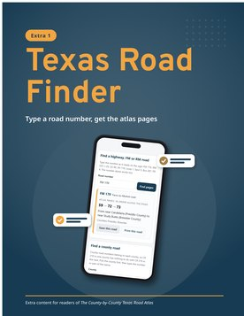
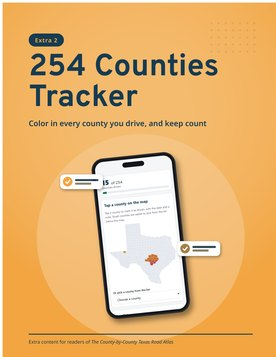
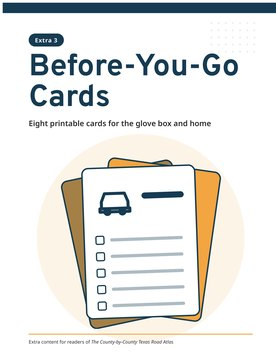
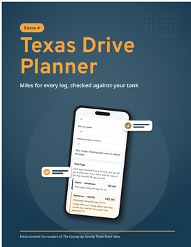
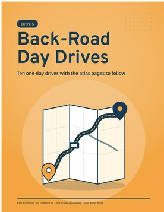
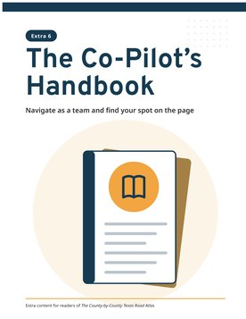

Your bonus materials
Almost there. Start with step 1, then come back here for your bonuses.
Go to step 1Sure you left your review? If you have not posted it yet, it takes two minutes and helps other drivers find this atlas. Good or bad, your honest opinion counts.
★ Write my review nowTexas Road Finder

Type any FM, RM or county road number and see the atlas pages it runs through.
254 Counties Tracker

Color in every Texas county you've driven, with the date and a note, and watch the count grow.
Before-You-Go Cards for Texas Back Roads

Print them, keep them in the glove box, and leave one at home with your route.
Texas Drive Planner

Pick your stops among all 254 county seats, see the miles for every leg, and check them against your tank.
Back-Road Day Drives

Ten one-day drives on Texas back roads, with the atlas pages to follow.
The Co-Pilot's Handbook

How to navigate as a team with the atlas and your phone, and find your spot on the page with no signal.
Tip: bookmark this page, and the apps are one tap away next time. The web apps need an internet connection to open; your saved roads, counties and routes stay in this browser, on this device.